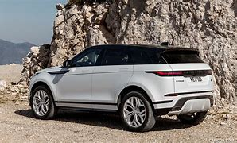
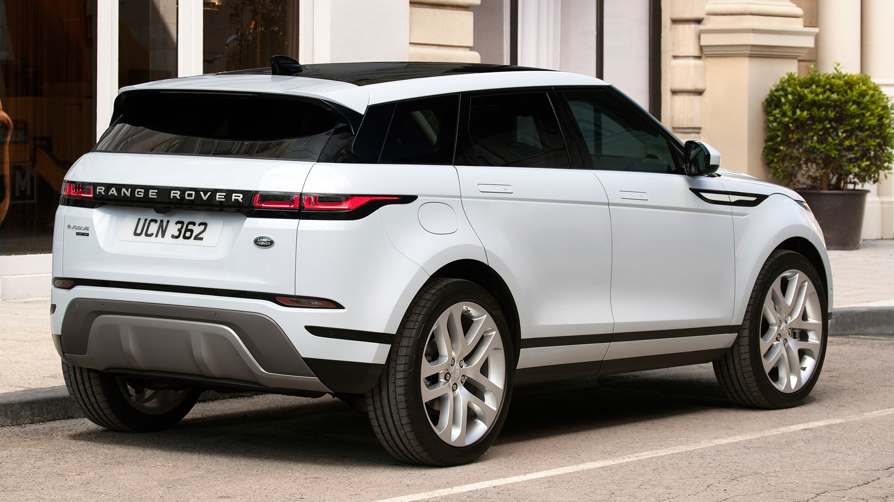
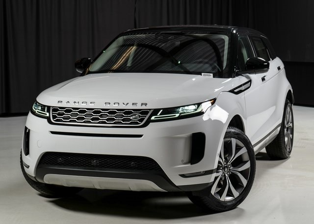
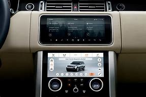
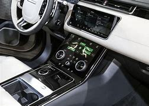

2020 RANGE ROVER VELAR
The 2020 Land Rover Range Rover Velar is a luxury SUV that slots in between the traditional compact and midsize classes. The base S model is very well-equipped, with features that include a panoramic sunroof, perforated leather upholstery and Apple CarPlay/Android Auto. The R-Dynamic S primarily adds sporty styling upgrades inside and out.
Price R798 722,40
    What's new?
- Trim lineup restructured, with fewer variants than before
- Diesel engine has been discontinued, while a new supercharged V8 appears on the new top trim level
- Part of the first Range Rover Velar generation introduced in 2018
On the surface, the 2020 Land Rover Range Rover Velar is one of the luxury SUV maker's more unusual offerings. The Velar's size and price effectively slot it between Land Rover's compact and midsize offerings. You'd think the Velar would feel crowded between these segments, but its sleek styling gives it an edge in the lineup. The Velar's fastback profile is shared with the similarly eye-catching Range Rover Evoque, and the design translates well to the slightly longer Velar. In addition to providing more cabin and cargo room than its smaller sibling, the Velar offers a wider range of engine choices and luxury features. It doesn't have a third-row seat like the larger Discovery or the off-road prowess of the Range Rover Sport, but the Velar delivers strong on-road performance. Overall, we like the Velar and its expressive styling. It certainly stands out in a field full of amorphous crossovers. But pay attention to the Velar's ride quality, which can be rather stiff, and give the frustrating-to-use infotainment interface a thorough test drive before you commit.
Cons
- Infotainment system is frustrating to use
- Overly firm ride quality unless you opt for the air suspension
On the surface, the 2020 Land Rover Range Rover Velar is one of the luxury SUV maker's more unusual offerings. The Velar's size and price effectively slot it between Land Rover's compact and midsize offerings. You'd think the Velar would feel crowded between these segments, but its sleek styling gives it an edge in the lineup. The Velar's fastback profile is shared with the similarly eye-catching Range Rover Evoque, and the design translates well to the slightly longer Velar. In addition to providing more cabin and cargo room than its smaller sibling, the Velar offers a wider range of engine choices and luxury features. It doesn't have a third-row seat like the larger Discovery or the off-road prowess of the Range Rover Sport, but the Velar delivers strong on-road performance. Overall, we like the Velar and its expressive styling. It certainly stands out in a field full of amorphous crossovers. But pay attention to the Velar's ride quality, which can be rather stiff, and give the frustrating-to-use infotainment interface a thorough test drive before you commit.
Pros
- Distinctive styling inside and out
- Strong V6 and V8 engines
- High-quality materials in the cabin
- Comfortable front seats
On the surface, the 2020 Land Rover Range Rover Velar is one of the luxury SUV maker's more unusual offerings. The Velar's size and price effectively slot it between Land Rover's compact and midsize offerings. You'd think the Velar would feel crowded between these segments, but its sleek styling gives it an edge in the lineup. The Velar's fastback profile is shared with the similarly eye-catching Range Rover Evoque, and the design translates well to the slightly longer Velar. In addition to providing more cabin and cargo room than its smaller sibling, the Velar offers a wider range of engine choices and luxury features. It doesn't have a third-row seat like the larger Discovery or the off-road prowess of the Range Rover Sport, but the Velar delivers strong on-road performance. Overall, we like the Velar and its expressive styling. It certainly stands out in a field full of amorphous crossovers. But pay attention to the Velar's ride quality, which can be rather stiff, and give the frustrating-to-use infotainment interface a thorough test drive before you commit
Engine
- Inline 4 cylinder
- Horsepower: 247 hp @ 5500 rpm
- Torque: 269 lb-ft @ N/A rpm
Basic warranty
4 yr./ 50000 mi.
MPG And Fuel
- 21 City / 27 Hwy / 23 Combined
- Fuel Tank Capacity: 16.6 gal. capacity
Seating
5 seats
Drivetrain
- Type: All Wheel Drive
- Transmission: 8-speed shiftable automatic
Dimension
- Length: 188.9 in. / Height: 65.6 in. / Width: N/A
- Curb Weight: 4217 lbs.
- Cargo Capacity, All Seats In Place: 34.4 cu.ft.
Safety
Our experts’ favorite Range Rover Velar safety features:
Adaptive Cruise Control
Adjusts the speed of your SUV to keep pace with the vehicle ahead.
High-speed Emergency Braking
Applies the brakes automatically if the Velar senses an imminent front collision.
Blind-spot Assist
Gives a visible notification if it senses a vehicle in any of your blind spots.
Home